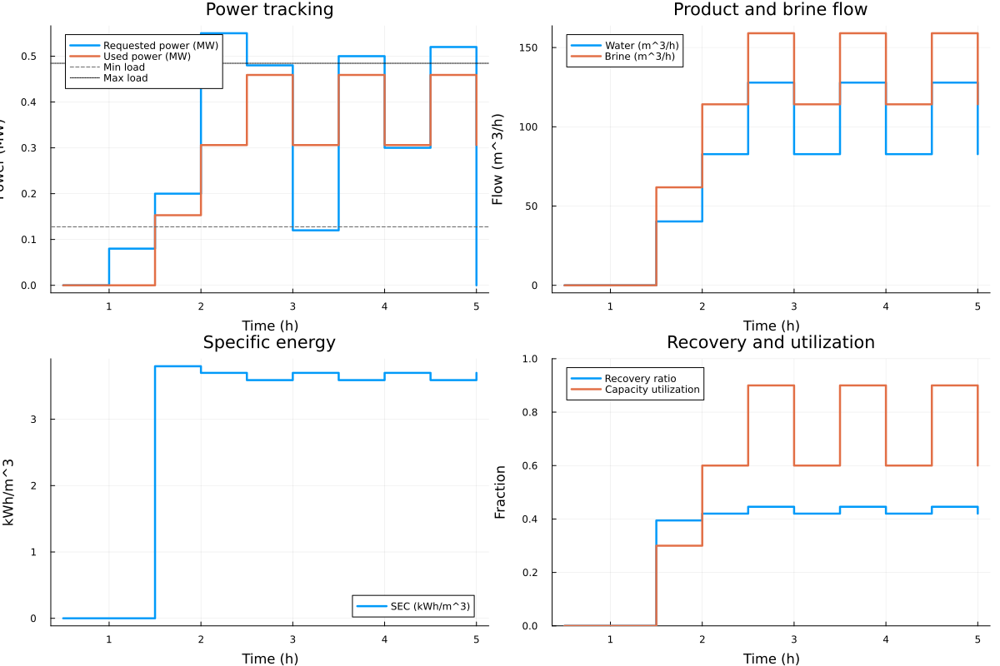

Dynamic RO desalination walkthrough
This script is both a runnable example and a Literate.jl source used by the docs. It exercises minimum load shutdown, maximum load clipping, first-order response, and ramp-rate limits, then plots dynamic behavior.
using Desal
ENV["GKSwstype"] = get(ENV, "GKSwstype", "100")
using Plots1. Define a plant design
The parameters below intentionally emphasize dynamic effects.
design = DesignStruct(
name = "SWRO Dynamic Case",
capacity_m3_per_h = 150.0,
specific_energy_nominal_kwh_per_m3 = 3.4,
recovery_ratio_nominal = 0.45,
min_load = 0.25,
max_load = 0.95,
ramp_rate_fraction_per_hour = 0.6,
response_time_hours = 0.15,
feed_salinity_g_per_l = 37.0,
nominal_salinity_g_per_l = 35.0,
feed_temperature_c = 23.0,
nominal_temperature_c = 25.0,
part_load_penalty = 0.25,
recovery_part_load_sensitivity = 0.18,
min_recovery_ratio = 0.2,
max_recovery_ratio = 0.65,
)DesignStruct{Float64}("SWRO Dynamic Case", 150.0, 3.4, 0.45, 0.25, 0.95, 0.6, 0.15, 37.0, 35.0, 23.0, 25.0, 0.25, 0.18, 0.2, 0.65)2. Static operating point
op_static = OperationStruct(static = true, power_input_mw = 0.32, duration_hours = 1.5)
static_out = Desalinate(design, op_static)
println("Static outputs:")
println(static_out)Static outputs:
StaticOutputs{Float64}(0.32, 0.32, 86.74984144747373, 118.57597935560699, 3.6887675488577947, 0.4224984520123839, 0.6274509803921569, 31.177642265571524, 0.48, 130.1247621712106, 177.86396903341048)3. Dynamic profile (fully exercised)
The profile below includes:
- values below minimum stable load
- values above maximum allowed load
- rapid up/down transitions to activate ramp and lag dynamics
time_hours = [0.5, 0.5, 0.5, 0.5, 0.5, 0.5, 0.5, 0.5, 0.5, 0.5]
power_profile_mw = [0.0, 0.08, 0.2, 0.55, 0.48, 0.12, 0.5, 0.3, 0.52, 0.0]
op_dynamic = OperationStruct(
static = false,
power_input_mw = power_profile_mw,
initial_power_mw = 0.0,
)
dynamic_out = Desalinate(time_hours, design, op_dynamic)
println("Dynamic outputs:")
println(dynamic_out)Dynamic outputs:
DynamicOutputs{Float64}([0.5, 0.5, 0.5, 0.5, 0.5, 0.5, 0.5, 0.5, 0.5, 0.5], [0.0, 0.08, 0.2, 0.55, 0.48, 0.12, 0.5, 0.3, 0.52, 0.0], [0.0, 0.0, 0.153, 0.306, 0.45899999999999996, 0.30599999999999994, 0.45899999999999996, 0.30599999999999994, 0.45899999999999996, 0.30599999999999994], [0.0, 0.0, 40.282862667127404, 82.73979972188103, 127.87903634578383, 82.73979972188101, 127.87903634578383, 82.73979972188101, 127.87903634578383, 82.73979972188101], [0.0, 0.0, 61.80789239161886, 114.18569128597812, 159.01453911411613, 114.18569128597811, 159.01453911411613, 114.18569128597811, 159.01453911411613, 114.18569128597811], [0.0, 0.0, 3.7981411913124727, 3.6983410768285494, 3.5893295188655303, 3.6983410768285494, 3.5893295188655303, 3.6983410768285494, 3.5893295188655303, 3.6983410768285494], [0.0, 0.0, 0.39457894736842103, 0.4201578947368421, 0.44573684210526315, 0.4201578947368421, 0.44573684210526315, 0.4201578947368421, 0.44573684210526315, 0.4201578947368421], [0.0, 0.0, 0.3, 0.6, 0.8999999999999999, 0.5999999999999999, 0.8999999999999999, 0.5999999999999999, 0.8999999999999999, 0.5999999999999999], [31.177642265571524, 31.177642265571524, 31.177642265571524, 31.177642265571524, 31.177642265571524, 31.177642265571524, 31.177642265571524, 31.177642265571524, 31.177642265571524, 31.177642265571524], 1.377, 377.43958529600144, 497.7971374389399, 3.648265983866287, 0.431242857494116, 0.5399999999999998)4. Plot dynamic behavior
rated_power_mw = design.capacity_m3_per_h * design.specific_energy_nominal_kwh_per_m3 / 1000.0
min_power_mw = rated_power_mw * design.min_load
max_power_mw = rated_power_mw * design.max_load
t = cumsum(time_hours)
p1 = plot(
t,
dynamic_out.power_requested_mw;
seriestype = :steppost,
lw = 2.5,
label = "Requested power (MW)",
xlabel = "Time (h)",
ylabel = "Power (MW)",
title = "Power tracking",
)
plot!(
p1,
t,
dynamic_out.power_used_mw;
seriestype = :steppost,
lw = 2.5,
label = "Used power (MW)",
)
hline!(p1, [min_power_mw]; color = :gray40, ls = :dash, label = "Min load")
hline!(p1, [max_power_mw]; color = :black, ls = :dot, label = "Max load")
p2 = plot(
t,
dynamic_out.water_output_m3_per_h;
seriestype = :steppost,
lw = 2.5,
label = "Water (m^3/h)",
xlabel = "Time (h)",
ylabel = "Flow (m^3/h)",
title = "Product and brine flow",
)
plot!(
p2,
t,
dynamic_out.brine_output_m3_per_h;
seriestype = :steppost,
lw = 2.5,
label = "Brine (m^3/h)",
)
p3 = plot(
t,
dynamic_out.specific_energy_kwh_per_m3;
seriestype = :steppost,
lw = 2.5,
label = "SEC (kWh/m^3)",
xlabel = "Time (h)",
ylabel = "kWh/m^3",
title = "Specific energy",
)
p4 = plot(
t,
dynamic_out.recovery_ratio;
seriestype = :steppost,
lw = 2.5,
label = "Recovery ratio",
xlabel = "Time (h)",
ylabel = "Fraction",
ylim = (0, 1),
title = "Recovery and utilization",
)
plot!(
p4,
t,
dynamic_out.capacity_utilization;
seriestype = :steppost,
lw = 2.5,
label = "Capacity utilization",
)
p = plot(p1, p2, p3, p4; layout = (2, 2), size = (1200, 800))
profile_path = joinpath(@__DIR__, "..", "docs", "src", "generated",
"desalination_dynamic_profile.svg")
mkpath(dirname(profile_path))
savefig(p, profile_path)
println("Saved plot to: " * abspath(profile_path))Saved plot to: /home/runner/work/Desal.jl/Desal.jl/docs/build/docs/src/generated/desalination_dynamic_profile.svg
pThis page was generated using Literate.jl.